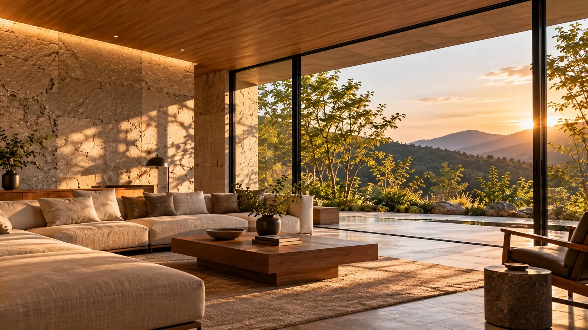

Renovation
住宅リノベーション
マンション・戸建ての全面改修から、キッチンや浴室などの部分改修まで。構造や配管の状態を調べたうえで、残すもの・変えるものを一緒に決めていきます。
- 中古住宅を購入して、自分らしく改修したい
- 長く住んだ家を、これからの暮らしに合わせたい
- 間取りを大きく変えられるか知りたい
参考価格
¥12,000,000〜（税込・全面改修 70㎡の場合）
※ ポートフォリオ用の架空の参考価格です。実際の工事費用を示すものではありません。